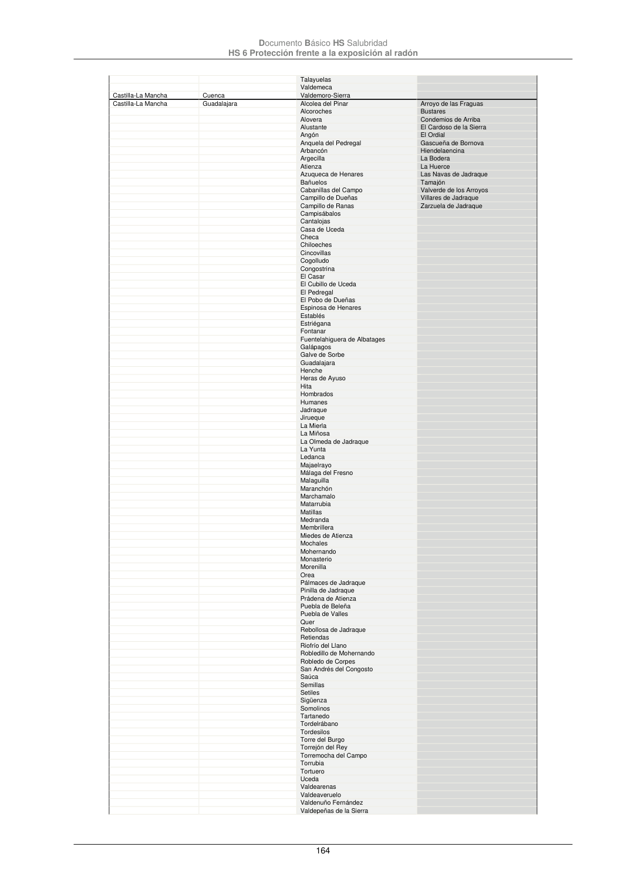

DB-HS Salubridad · edición 2022-06-14 · capa oficial
Documento DB-HS-oficial · SHA-256 del PDF 68df3caacc95f71aee2ec1ba7b2c65ae66155c21e3a8785521b8fdd4fd640d3b
Página física 164 de 184.
Copia fiel del PDF fuente · Fuente oficial
Ficha de la disposición en la fuente oficial
Formato: Texto de la página (Markdown)
Documento Básico HS Salubridad HS 6 Protección frente a la exposición al radón 164 Talayuelas Valdemeca Castilla-La Mancha Cuenca Valdemoro-Sierra Castilla-La Mancha Guadalajara Alcolea del Pinar Arroyo de las Fraguas Alcoroches Bustares Alovera Condemios de Arriba Alustante El Cardoso de la Sierra Angón El Ordial Anquela del Pedregal Gascueña de Bornova Arbancón Hiendelaencina Argecilla La Bodera Atienza La Huerce Azuqueca de Henares Las Navas de Jadraque Bañuelos Tamajón Cabanillas del Campo Valverde de los Arroyos Campillo de Dueñas Villares de Jadraque Campillo de Ranas Zarzuela de Jadraque Campisábalos Cantalojas Casa de Uceda Checa Chiloeches Cincovillas Cogolludo Congostrina El Casar El Cubillo de Uceda El Pedregal El Pobo de Dueñas Espinosa de Henares Establés Estriégana Fontanar Fuentelahiguera de Albatages Galápagos Galve de Sorbe Guadalajara Henche Heras de Ayuso Hita Hombrados Humanes Jadraque Jirueque La Mierla La Miñosa La Olmeda de Jadraque La Yunta Ledanca Majaelrayo Málaga del Fresno Malaguilla Maranchón Marchamalo Matarrubia Matillas Medranda Membrillera Miedes de Atienza Mochales Mohernando Monasterio Morenilla Orea Pálmaces de Jadraque Pinilla de Jadraque Prádena de Atienza Puebla de Beleña Puebla de Valles Quer Rebollosa de Jadraque Retiendas Riofrío del Llano Robledillo de Mohernando Robledo de Corpes San Andrés del Congosto Saúca Semillas Setiles Sigüenza Somolinos Tartanedo Tordelrábano Tordesilos Torre del Burgo Torrejón del Rey Torremocha del Campo Torrubia Tortuero Uceda Valdearenas Valdeaveruelo Valdenuño Fernández Valdepeñas de la Sierra

Datos candidatos: compruebe celdas y notas en el PDF.